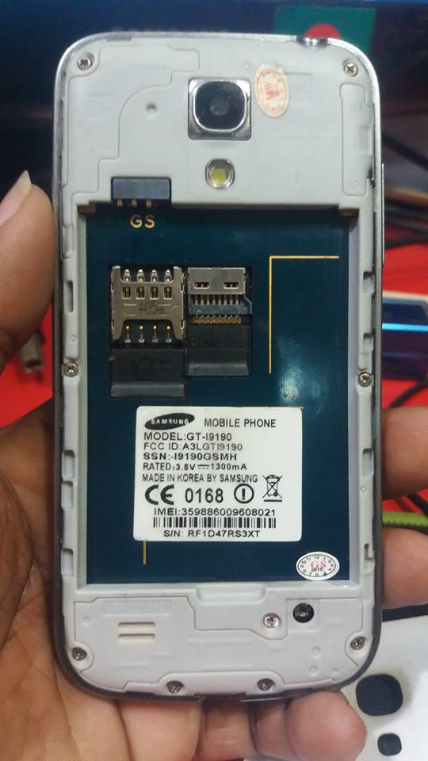

MT6572 Obscure (mediatek-mt6572obscure)
|
 MT6572 Obscure | |
| Manufacturer | ALPS (Known also as iPro) |
|---|---|
| Name | Mediatek Obscure Device (MT6572) |
| Codename | mediatek-mt6572obscure |
| Released | 2014 |
| Category | testing |
| Original software | Android 4.2.2 |
| Hardware | |
| Chipset | MediaTek MT6572 |
| CPU | 2x 1.2 GHz Cortex-A7 |
| GPU | Mali-400 |
| Display | 480x854 |
| Storage | 512 MB |
| Memory | 256 MB |
| Architecture | armv7 |
{kind=link}
| USB Networking | |
|---|---|
| Flashing | |
| Touchscreen | |
| Display | |
| WiFi | |
| FDE | |
| Mainline | |
| Battery | |
| 3D Acceleration | |
| Audio | |
| Bluetooth | |
| Camera | |
| GPS | |
| Mobile data | |
| SMS | |
| Calls | |
| USB OTG | |
| NFC | |
| Accelerometer | |
|---|---|
| Magnetometer | |
| Ambient Light | |
| Proximity | |
| Hall Effect | |
| Ir TX | |
|---|---|
| TrustZone | |
Contents
Why this?
This phone is a counterfeit Samsung S4 Mini clone produced in 2014 by ALPS. I got scammed while buying this counterfeit product but hey hackers (or wannabes like me) still can see an opportunity in this thing right? It's very low end phone with 256MB ram with 512MB NAND storage. This project is a learning experience for me and don't expect a working thing soon.
Phone Info (according to Android's "About This Device" )
Hardware : MT6572
Model : GT-I9190
Build number : ALPS.JB3.MP.V1
Build date UTC : 20140825-084936
Android v : 4.2.2 *(found also a version running Android 5.0 in USA ROMS)*
Baseband v: MOLY.WR8.W1315.MD.WG.MP.V1.P1, 2013/09/24 12:14
Kernel v : 3.4.5 (sw07@server5) (gcc version 4.6.x-google 20120106 (prerelease) (GCC) ) #1 SMP Mon Aug 25 16:48:30 CST 2014
Uboot build v : -----
LCD Driver IC : 1-nt35512_fwvga_dsi_vdo_auo
Partitions
shell@android:/ # cat /proc/mtd
dev: size erasesize name
mtd0: 00100000 00040000 "preloader"
mtd1: 00100000 00040000 "pro_info"
mtd2: 00300000 00040000 "nvram"
mtd3: 00300000 00040000 "protect_f"
mtd4: 00300000 00040000 "protect_s"
mtd5: 00040000 00040000 "seccnfg"
mtd6: 00080000 00040000 "uboot"
mtd7: 00600000 00040000 "boot"
mtd8: 00600000 00040000 "recovery"
mtd9: 00040000 00040000 "secstatic"
mtd10: 000c0000 00040000 "misc"
mtd11: 00100000 00040000 "logo"
mtd12: 00200000 00040000 "expdb"
mtd13: 01400000 00040000 "fat"
mtd14: 0f000000 00040000 "system"
mtd15: 00700000 00040000 "cache"
mtd16: 0cec0000 00040000 "userdata"
shell@android:/ # df
Filesystem Size Used Free Blksize
/dev 112M 52K 112M 4096
/mnt/secure 112M 0K 112M 4096
/mnt/asec 112M 0K 112M 4096
/mnt/obb 112M 0K 112M 4096
/system 213M 179M 34M 4096
/data 183M 143M 39M 4096
/fat 13M 9M 3M 4096
/protect_f 3M 1M 1M 4096
/protect_s 3M 1M 1M 4096
/mnt/cd-rom 1M 1M 0K 2048
/storage/sdcard0 12M 1M 10M 4096
/mnt/secure/asec 12M 1M 10M 4096
shell@android:/ # cat /proc/partitions
major minor #blocks name
7 0 1254 loop0
7 1 12476 loop1
253 0 196608 zram0
31 0 1024 mtdblock0
31 1 1024 mtdblock1
31 2 3072 mtdblock2
31 3 3072 mtdblock3
31 4 3072 mtdblock4
31 5 256 mtdblock5
31 6 512 mtdblock6
31 7 6144 mtdblock7
31 8 6144 mtdblock8
31 9 256 mtdblock9
31 10 768 mtdblock10
31 11 1024 mtdblock11
31 12 2048 mtdblock12
31 13 20480 mtdblock13
31 14 245760 mtdblock14
31 15 7168 mtdblock15
31 16 211712 mtdblock16
Serial Connection (UART Debug)
How to Prepare Mtk Debug Cable
You can see UART messages on serial monitor with 115200 baudrate but after the kernel booted no message is shown.
fastboot oem p2u on
fastboot oem p2u 1
codes entered in fastboot but no luck. This problem needs to be solved.
Here is the uart output: READY Uncompressing Linux... done, booting the kernel.
Memory Info
shell@android:/proc # cat /proc/meminfo
MemTotal: 230124 kB
MemFree: 5144 kB
Buffers: 8 kB
Cached: 36788 kB
SwapCached: 2208 kB
Active: 68648 kB
Inactive: 64156 kB
Active(anon): 49888 kB
Inactive(anon): 47452 kB
Active(file): 18760 kB
Inactive(file): 16704 kB
Unevictable: 1292 kB
Mlocked: 0 kB
HighTotal: 0 kB
HighFree: 0 kB
LowTotal: 230124 kB
LowFree: 5144 kB
SwapTotal: 196604 kB
SwapFree: 127640 kB
Dirty: 0 kB
Writeback: 0 kB
AnonPages: 96724 kB
Mapped: 41440 kB
Shmem: 40 kB
Slab: 13348 kB
SReclaimable: 4428 kB
SUnreclaim: 8920 kB
KernelStack: 4464 kB
PageTables: 4848 kB
NFS_Unstable: 0 kB
Bounce: 0 kB
WritebackTmp: 0 kB
CommitLimit: 311664 kB
Committed_AS: 2063136 kB
VmallocTotal: 778240 kB
VmallocUsed: 97476 kB
VmallocChunk: 411652 kB
CPU
shell@android:/proc # cat /proc/cpuinfo
Processor : ARMv7 Processor rev 3 (v7l)
processor : 0
BogoMIPS : 1993.93
Features : swp half thumb fastmult vfp edsp thumbee neon vfpv3 tls vfpv4 idiva idivt
CPU implementer : 0x41
CPU architecture: 7
CPU variant : 0x0
CPU part : 0xc07
CPU revision : 3
Hardware : MT6572
Revision : 0000
Serial : 0000000000000000
How to enter flash mode
Take out the battery. Open SP Flash Tool program. Insert micro usb cable to the phone and then insert the battery.
What works
- Nothing works
What does not work
- Everything
Contributors
- echza
Maintainer(s)
- echza